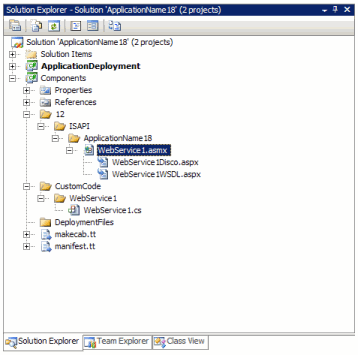

ASMX Webservice |


|
|
|
ASMX Webservice |
Adds a ASP.NET web service




| Name | Description |
|---|---|
| Name | Required String. Enter the name of the web service. |
| Description | Required String. Enter the description of the web service. |
|
Disclaimer: The views and opinions expressed in this documentation and in SPSF are those of the authors and do not necessarily reflect the opinions and recommendations of Microsoft or any member of Microsoft. All trademarks, service marks, collective marks, copyrights, registered names, and marks used or cited by this documentation are the property of their respective owners.
SharePoint Software Factory, Version 4.1.3.2705, GPLv2, see http://spsf.codeplex.com for more information |